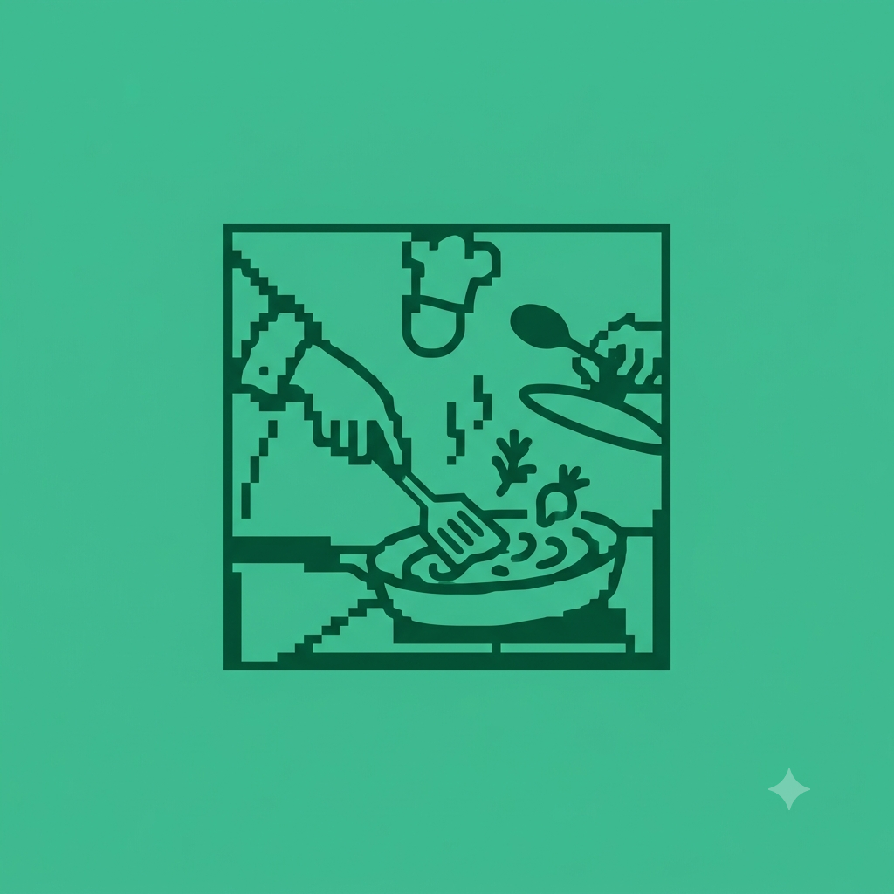
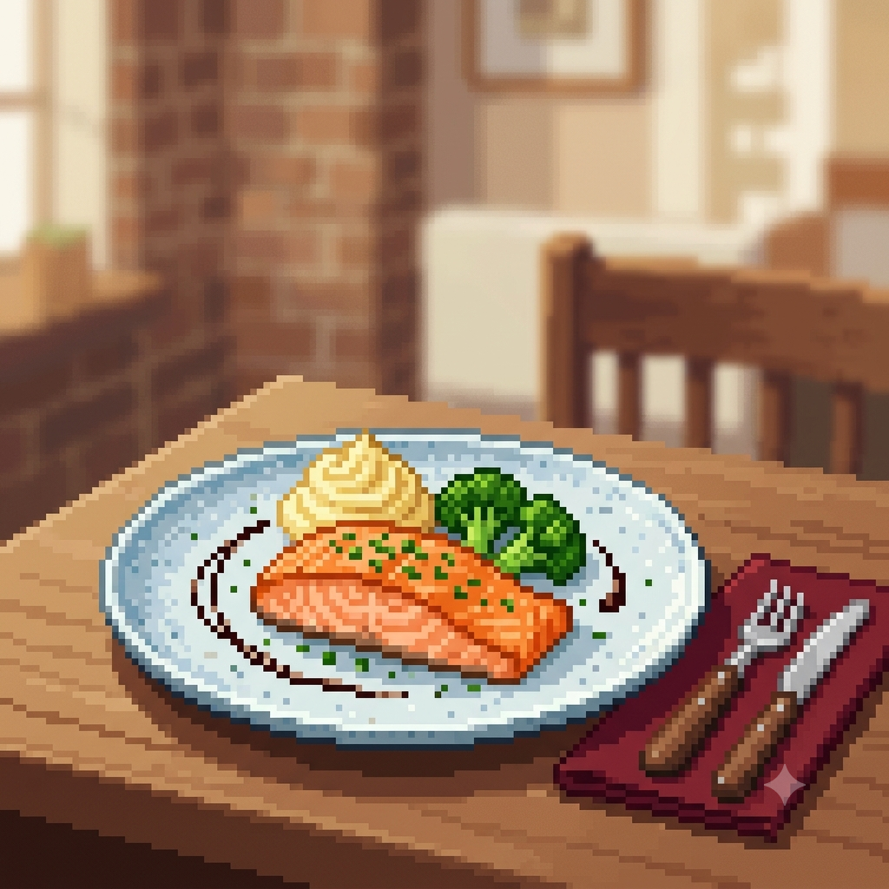

Minha primeira postagem de gastronomia
Por: Isabela Shimohiro
Boas vindas ao meu blog! Vou compartilhar curiosidades sobre gastronomia
Vou compartilhar alguns conhecimentos de gastronomia
Por: Isabela Shimohiro
Boas vindas ao meu blog! Vou compartilhar curiosidades sobre gastronomia

Por: Isabela Shimohiro
A gastronomia é a arte de transformar ingredientes em emoções e memórias. Mais do que nutrir, ela une cultura, sabor e afeto, transformando qualquer refeição em uma experiência especial ao redor da mesa.

Por: Isabela Shimohiro
Novos Sabores, Novas Experiências > A gastronomia está sempre mudando — e nós acompanhamos cada transformação. Descubra como a fusão de culturas, a sustentabilidade e a tecnologia estão moldando o futuro do que vai ao nosso prato.